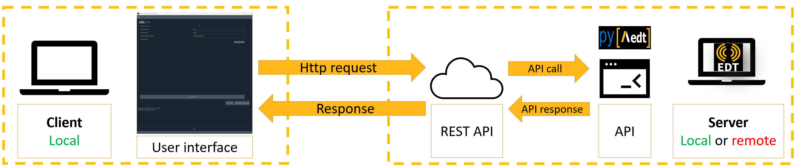

Architecture#
The AEDT Common Toolkit provides a common API for creating new AEDT toolkits. Thereby standardizing their implementations.
The API provides methods for connecting to an existing AEDT session, opening an existing AEDT project, and initializing a new AEDT session, which are basic capabilities required by any toolkit.
The architecture is divided in two main parts:
Backend: Consists of the API and REST API. The API is built on PyAEDT. The REST API uses Flask to facilitate the creation of a REST API that enables interactions between different services through HTTP requests. By leveraging Flask, the toolkit becomes interface-agnostic, allowing flexibility in choosing different user interfaces such as a Web UI.
User Interface: Provides UI creation capability using Pyside6. Pyside6 includes a designer tool for creating UIs translated directly to Python.
Toolkit architecture diagram#
{kind=link}
Toolkit backend and UI#
The repository for the PyAEDT Common Toolkit is structured as follows:
pyaedt-toolkits-common
├── .github
│ └──workflows
│ └── ci_cd.yml
├── doc
│ └──source
│ ├── examples
│ └── getting_started
│ └── toolkit
├── src.ansys.aedt.toolkits
│ └──common
│ ├── backend
│ │ ├── api.py
│ │ ├── rest_api.py
│ │ ├── common_properties.toml
│ │ └── models.py
│ ├── ui
│ │ ├── common_windows
│ │ ├── main_window
│ │ └── utils
│ │ └── common_properties.toml
│ │ └── models.py
├── tests
│ └── backend
├── pyproject.toml
└── README.rst
.github: GitHub Action configuration.
doc: Documentation structure.
common: Toolkit code, split into backend and UI.
- backend:
Non-user-facing part of the toolkit for handling requests and preparing data for the UI. Key files include:
rest_api.py: Defines Flask entrypoints.api.py: Defines the toolkit API.common_properties.toml: Defines common backend properties.models.py: Defines the class for storing backend properties.
ui: UI part of the toolkit. Key files include:
common_properties.toml: Defines common UI properties.models.py: Defines the class for storing UI properties.
tests: Folder containing the backend unit tests.
Models and properties#
The models.py file stores the backend properties that are shared between the backend and UI. Properties are loaded by loading the content of the properties in the class properties.
To understand how the backend and UI interact, see the actions_generic.py file in the repository. For example, when an event is triggered by the frontend, the get_properties() method builds the GET HTTP request to send to the backend to retrieve properties from the backend. The event of setting up a property calls the set_properties() method, which builds the PUT HTTP request that is sent to the backend.
API#
The Backend API reference contains three classes, Common, AEDTCommon, and EDBCommon, which provide methods for
controlling the toolkit workflow.
REST API#
REST APIs are standard web interfaces allowing clients to communicate with services via HTTP requests. JSON is the standard for transferring data. In fact, REST APIs accept JSON for request payload and also send responses to JSON.
In the client-server architecture model, the client sends the request to the server to fetch some information. Server-side technologies decode JSON information and transmit back the response to the client. This interaction is handled by the HTTP protocol.
UI and backend interaction#
The UI sends HTTP requests to retrieve data, while the backend returns appropriate results.
The toolkit uses CRUD (Create, Read, Update & Delete) operations that are simply HTTP request methods that specify the action to perform through the request.
UI#
For more information on the UI, see UI API reference.